How to make multiple channel tabs in zMUD
"Hey, Fiendish, your channel capture is great, but I wish I could have multiple windows with the channels split up in them instead of having all channels go into just one window."
I really wish I could do this part for you. Unfortunately, zMUD doesn't allow me to do create tabs in subwindows from inside a script. The only way that I know of to do this is a manual process. So I'm going to show you how to do it with a series of examples.
In order to follow this page, you'll first need to download and install the base channel capture script from here: Channel Capture Script.
Before you begin, you need some information first. Just keep the following information in mind for later.
First you need to know how to make a tabbed environment...
In order to create a tabbed environment, you need to start with at least two windows.
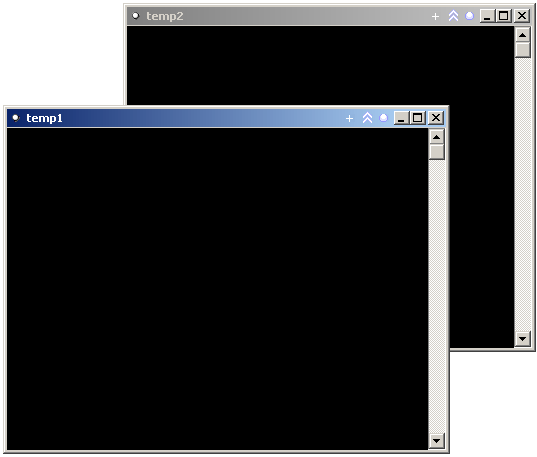
You also need to have your layout unlocked.
You can check this (or change it) by going to the Layout menu and unselecting "Lock Layout" if it is selected.
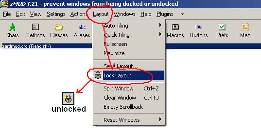
Having an unlocked layout allows you to dock windows inside each other.
Now you need to know about the different kinds of window docking in zMUD. There are 9 different modes for docking in windows -- tabbed, frame split left, frame split right, frame split top, frame split bottom, window split left, window split right, window split top, and window split bottom.
For this exercise, I'm only interested in the first one, tabbed, but below are examples of each so you know what you're looking at when you see them.
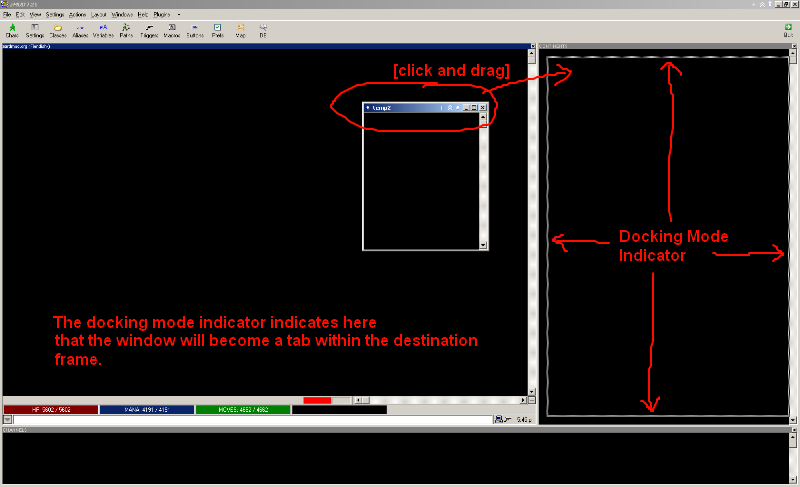
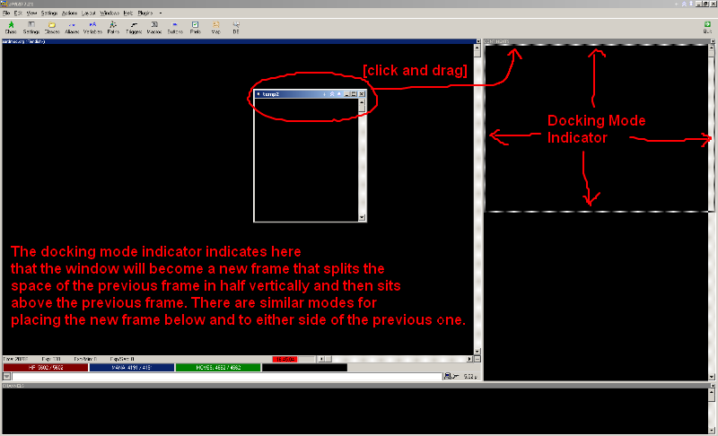
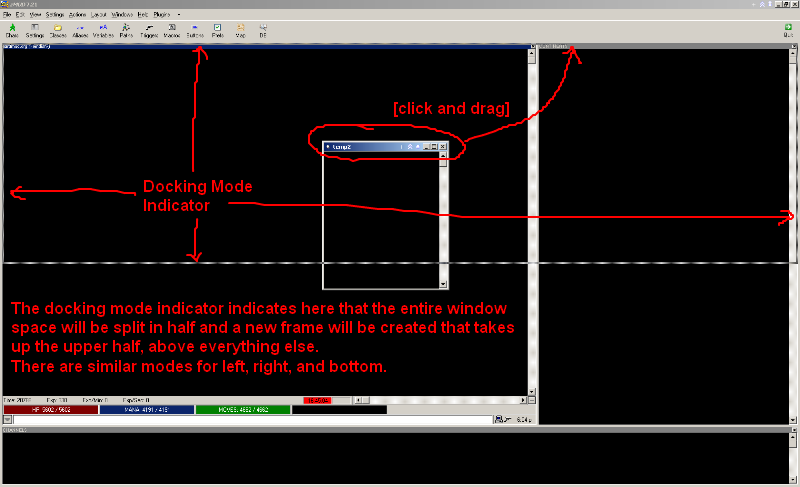
And here is what the results of each dock mode look like:
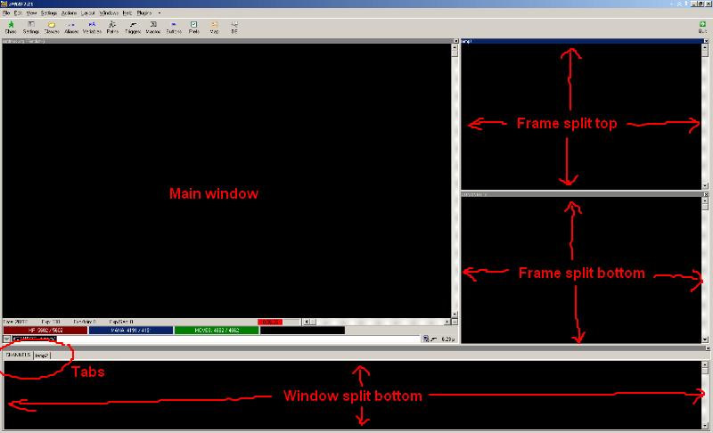
Now that you have the required docking information, we can move on to making the tabbed channel windows.
First, think about what tabs you want for channels. Let's assume for now that you're going to leave the CHANNELS window in place as it is (capturing all channels), and that you just want to add new tabs to that frame that each capture one or more different channels.
For the first example I'm going to make a special tab just for my Ftalk channel.
In preparation for this I'm going to actually create the tab. Then I'm going to modify the script to use it.
To make the tab I type "#MAKEW FRIENDS open floating=yes" to create a new window called FRIENDS. Then I type "FRIENDS: #MENU {Settings|Save As}" to save the new window. Then I use the information above to dock it as a new tab in the same frame that has CHANNELS.
Next bring up the main output Settings window. You can do this by clicking in the main output frame and then typing Ctrl+G. In the Settings window you want to find the class folder for ChannelCapture.
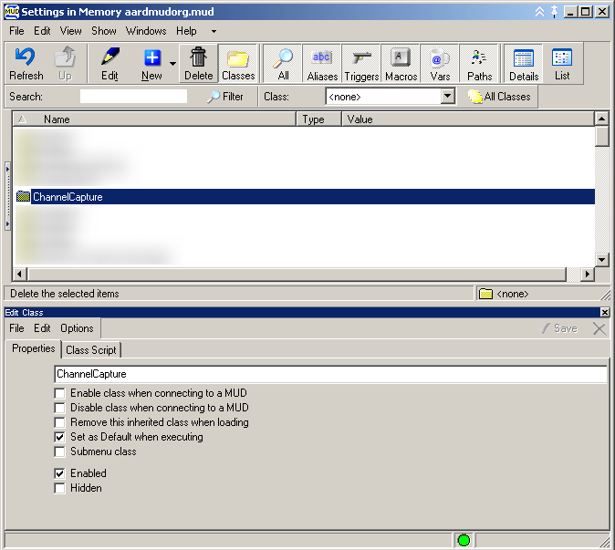
Double click on the ChannelCapture class and you'll see the stuff inside it. We're going to be working on the trigger that captures channels, so select it and look at the script contents.
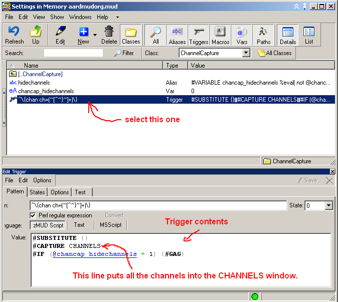
See the line above that captures all channels to the CHANNELS window. We're going to modify that line to also capture just my ftalk channel to the FRIENDS tab that I made.
So add a new line after #CAPTURE CHANNELS and type #IF (%1 = "ftalk") {#CAPTURE FRIENDS}
This means "If the channel name is ftalk, then capture it to the friends tab too."
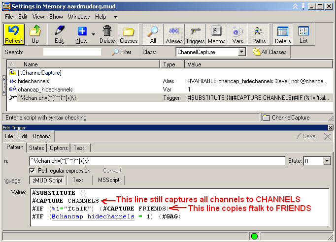
Now the CHANNELS tab has all my channels and the FRIENDS tab has just my ftalk.
Next I want to add another tab for the Tech channel, so I do what I did before for FRIENDS and make a new tab called TECH.
This time the script change is slightly more complicated, because I want to introduce some efficiency and a new concept.
Change the line we added last time to instead say #IF (%1 = "ftalk") {#CAPTURE FRIENDS} {#IF (%1 = "tech") {#CAPTURE TECH}}
This means "If the channel name is ftalk, then capture it to the friends tab. Otherwise (the second set of curly braces associated with the first #IF means 'otherwise' or 'else'), if the channel name is tech, capture it to the tech tab."
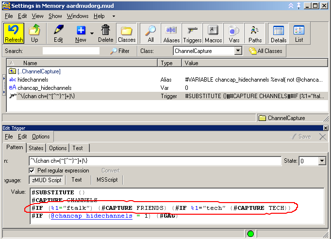
Now I could have put #IF (%1 = "tech") {#CAPTURE TECH} on its own line just like I originally did with the ftalk capture, but I did it this way for two reasons.
First, it's more efficient for zMUD to only check if the channel is Tech if it is not Ftalk.
Second, the "else" syntax enables us to do powerful things in fewer lines. For instance, say that for some reason you want your ftalk channel to ONLY go to the FRIENDS tab and not go to the CHANNELS tab.
You can accomplish by moving the #CAPTURE CHANNELS line inside the "else" clause for ftalk, like this...
#IF (%1 = "ftalk") {#CAPTURE FRIENDS} {#CAPTURE CHANNELS;#IF (%1 = "tech") {#CAPTURE TECH}}
This says "If the channel is ftalk, send to FRIENDS. Otherwise, send to CHANNELS and also send to TECH if the channel is tech."
Or maybe you want both your ftalk and my tech channels to not go to the CHANNELS tab. Then you might do...
#IF (%1 = "ftalk") {#CAPTURE FRIENDS} {#IF (%1 = "tech") {#CAPTURE TECH} {#CAPTURE CHANNELS}}
This says "If the channel is ftalk, send to FRIENDS. Otherwise, if the channel is tech send to TECH. Otherwise, send to CHANNELS."
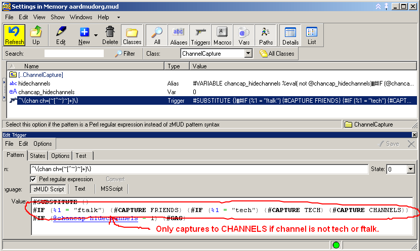
Once you're done making new tabs, don't forget to lock your layout and then save it again.
If you have more questions feel free to send me tells or personal notes.
- Fiendish